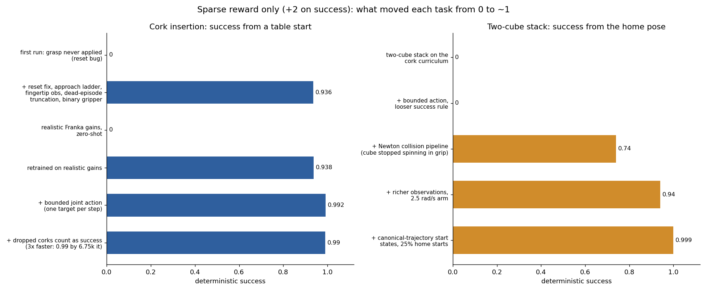
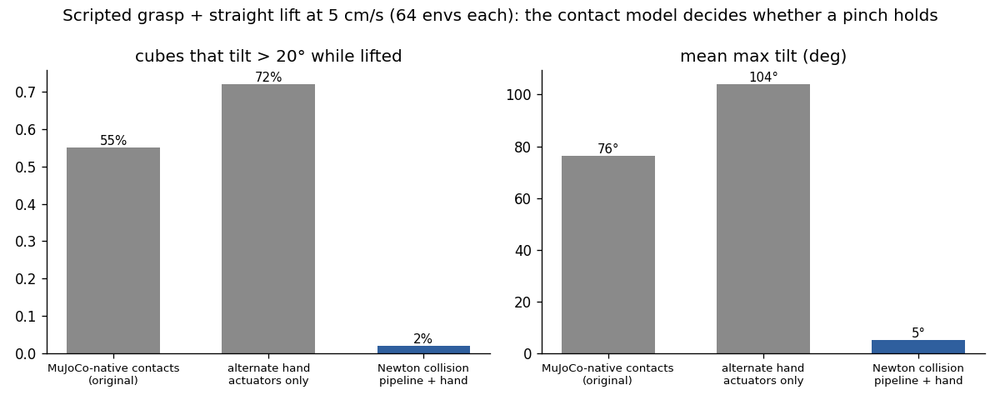

Task setup
Each task has a designed start distribution and a success rule; the policy outputs bounded joint-position steps and a gripper command.
A Franka arm learns cork insertion, cube stacking and cloth draping from a success bonus alone
A simulated Franka Panda arm learns to pick up a tapered cork, carry it and press it into a jar, to stack cubes, and to drape a cloth over the jar. Every policy is trained with reinforcement learning from a sparse reward: a bonus when the task is done, and nothing that says “get closer”. The long-term goal combines the tasks: drape a cloth over the jar’s mouth, then push the cork in on top of it, so the cloth ends up pinned between the cork and the jar, much like fitting a seal or gasket. Deterministic success is 0.99 for the upright cork, 0.79 for the cork lying on its side, 0.999 for the two-cube stack and 1.00 for the cloth drape. All results are from simulation.
Each task has a designed start distribution and a success rule; the policy outputs bounded joint-position steps and a gripper command.
| Robot | Franka Panda, 7-DoF arm with a parallel gripper, realistic joint gains and velocity limits |
|---|---|
| Physics | Isaac Lab on the Newton engine (MuJoCo-Warp for rigid bodies, VBD for cloth), GPU-parallel |
| Learning | PPO, 1,024 parallel environments on one GPU, 30 Hz control |
| Action | bounded joint-position steps (up to 2.5 rad/s) and an open/close gripper |
| Reward | +2 once on success; a negligible penalty on failure; tiny action and joint-speed penalties. No distance shaping. |
Training setup.
In typical RL approaches, dense rewards give the policy a signal at every step about what it's doing right or wrong. However, this can often result in suboptimal policies, or lots of developer time spent tuning reward functions and coefficients. Sparse rewards avoid that, but they're hard to learn from.
Success of the trained policy with deterministic actions, from the full-task start, over hundreds of episodes.
| Task | Start | Success | Typical time |
|---|---|---|---|
| Cork insertion | cork upright on the table, arm at home | 0.99 | 2.4–2.6 s |
| Cork insertion | cork lying on its side | 0.79 | 3–6 s |
| Two-cube stack | cube on the table, arm at home | 0.999 | 1.9 s |
| Cloth drape | sheet standing in a slot | 1.00 | 1.4 s |
Deterministic success and typical completion time per task.
Simulation only. The cloth drape is a throw, not a placement: the arm swings the sheet and lets go so it lands over the jar.


Before any learning, a standalone cloth simulation tested the core idea: if a cork is pressed into the jar through a cloth, is the cloth actually trapped? With the cork seated, all of the cloth in the bore stays when the cloth edge is pulled; with no cork, none of it does.
The drape policy above pinches a sheet standing in a slot and throws it over the jar, with the same sparse reward. It used a stiffer cloth than the proof of concept. Work in progress: a soft, tablecloth-like cloth lying on the table with nothing holding it, picked up by the edge that hangs over the table, then the full drape-and-insert task.